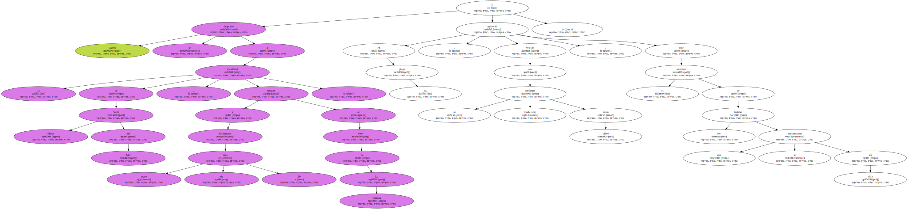
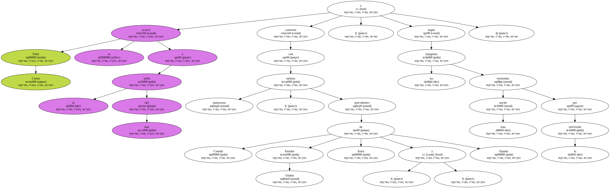
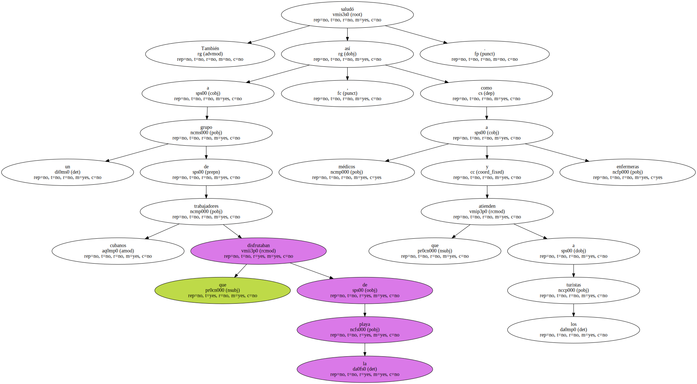
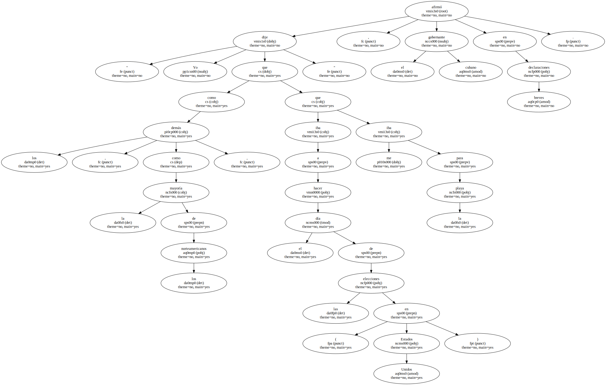
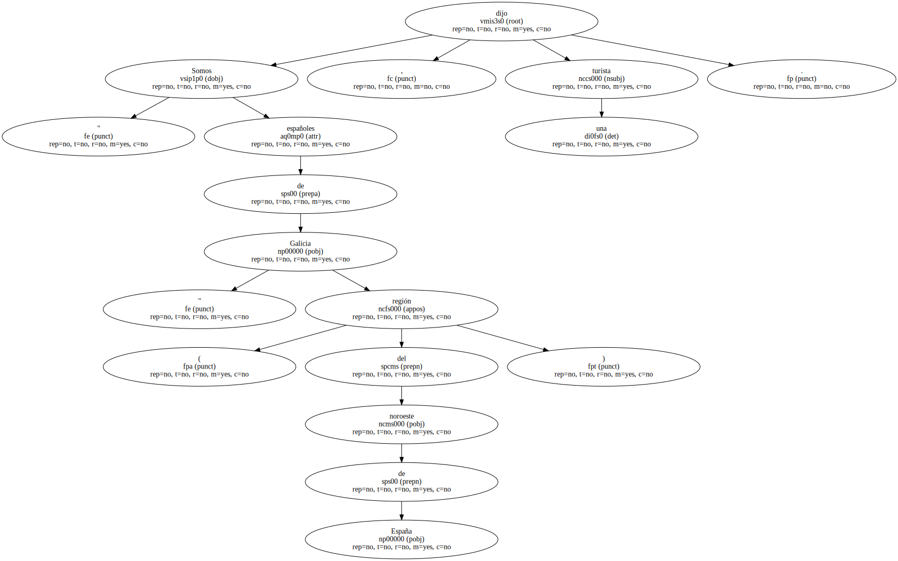
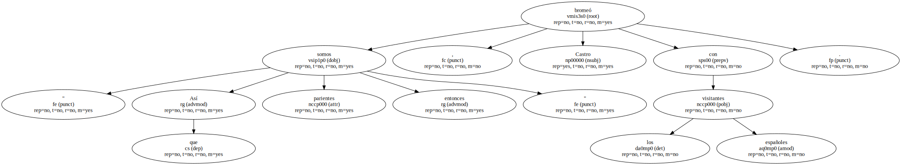
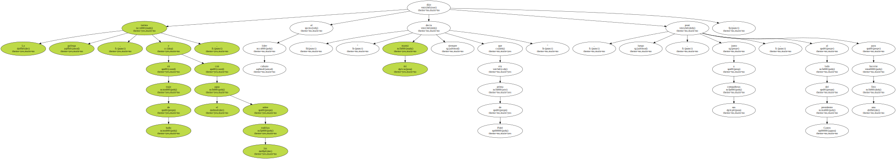
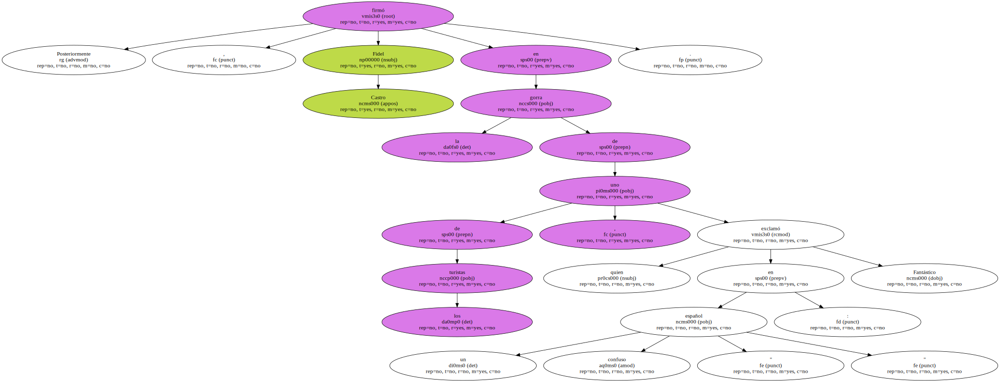
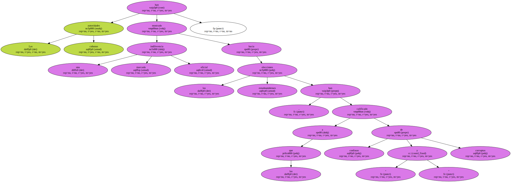

El presidente de Cuba , Fidel Castro , tal y como había prometido , se fue a la playa ayer , el día de las elecciones presidenciales en Estados Unidos , informó hoy la televisión local.

Castro se desplazó a la localidad de Santa María del Mar , situada a poco más de 20 kilómetros al este de La Habana , y apareció en la playa , vestido con su tradicional uniforme verde olivo , ante el asombro de los turistas que se encontraban en ella.
Fidel Castro se acercó a la orilla del mar y conversó con numerosos turistas , procedentes de Canadá , Estados Unidos , Italia y España , según las imágenes mostradas esta noche por la televisión.
También saludó a un grupo de trabajadores cubanos que disfrutaban de la playa , así como a médicos y enfermeras que atienden a los turistas.
" Yo dije que el día de las elecciones ( en Estados Unidos ) iba a hacer como los demás , como la mayoría de los norteamericanos , que me iba para la playa " , afirmó el gobernante cubano en breves declaraciones.
" Somos españoles de Galicia " ( región del noroeste de España ) , dijo una turista.
" Así que somos parientes entonces " , bromeó Castro con los visitantes españoles.
La turista gallega , en traje de baño y con el agua sobre las rodillas , dijo al líder cubano : " mi mamá siempre decía que era prima de Fidel " , luego , junto a sus compañeras , posó al lado del presidente Castro para hacerse una foto.
Posteriormente , Fidel Castro firmó en la gorra de uno de los turistas , quien exclamó en un español confuso : " Fantástico ".
Las autoridades cubanas han mostrado una marcada indiferencia oficial hacia las elecciones estadounidenses , a las que han calificado de " confusas y corruptas ".
